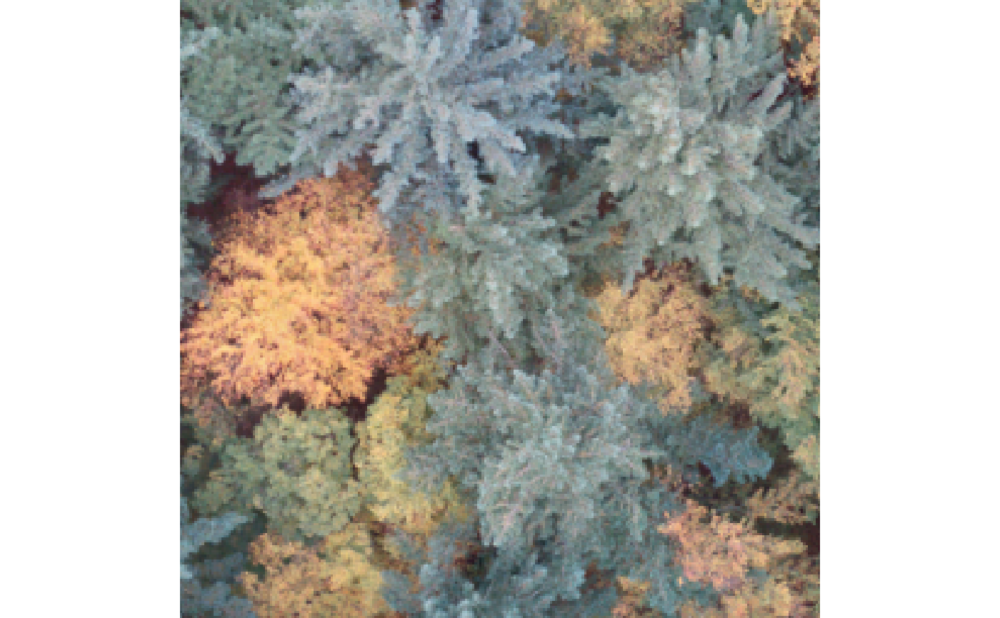
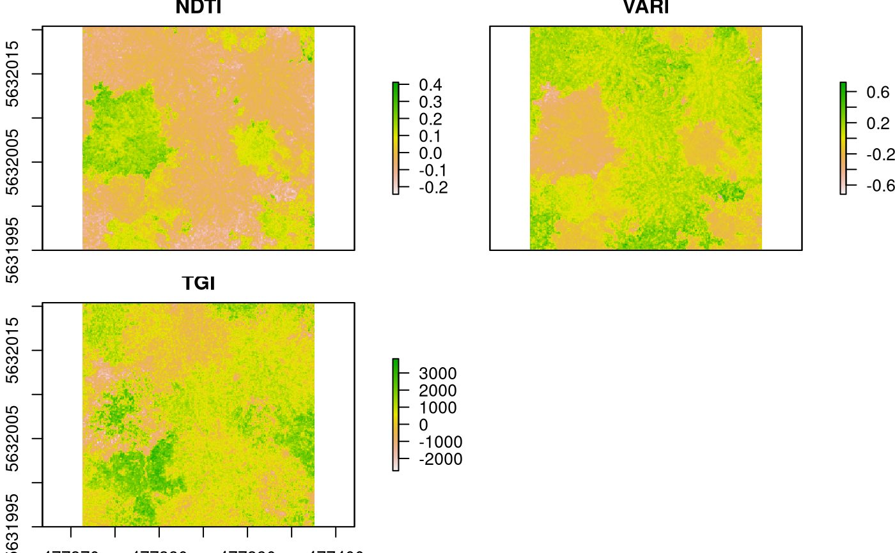
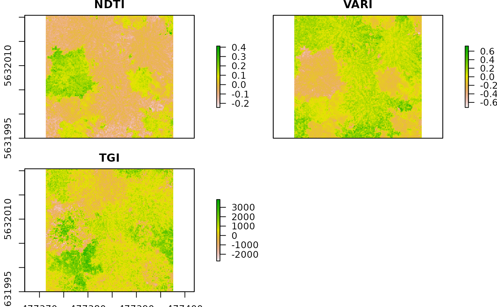

This function calculates various spectral indices from a RGB. It returns at least red green and blue as splitted channels in a stack. Additionally you can choose RGB indices.
Raster* object.
This function calculates various spectral indices from a RGB. It returns at least red green and blue as splitted channels in a stack. Additionally you can choose RGB indices.
Raster* object.
rgb_indices(
red,
green,
blue,
rgbi = c("VVI", "VARI", "NDTI", "RI", "SCI", "BI", "SI", "HI", "TGI", "GLI", "NGRDI",
"GRVI", "GLAI", "HUE", "CI", "SAT", "SHP")
)
rgb_indices(
red,
green,
blue,
rgbi = c("VVI", "VARI", "NDTI", "RI", "SCI", "BI", "SI", "HI", "TGI", "GLI", "NGRDI",
"GRVI", "GLAI", "HUE", "CI", "SAT", "SHP")
)a single Raster or RasterBrick band.
a single Raster or RasterBrick band.
a single Raster or RasterBrick band.
the implemented RGB indices currently
BI sqrt((R**2+G**2+B*2)/3 Brightness Index
SCI (R-G)/(R+G) Soil Colour Index
GLI (2*g - r - b)/(2*g + r + b) Green leaf index Vis Louhaichi et al. (2001)
HI (2*R-G-B)/(G-B) Primary colours Hue Index MATHIEU et al. (1998)
NDTI (R-G)/(R+G) Normalized difference turbidity index Water Lacaux et al. (2007)
NGRDI (G-R)/(G+R) Normalized green red difference index (sometimes GRVI) Tucker (1979)
RI R**2/(B*G**3) Redness Index
SI (R-B)/(R+B) Spectral Slope Saturation Index
TGI -0.5[190(R670-R550)-120(R670 - R480)] The triangular greenness index (TGI) estimates chlorophyll concentration in leaves and canopies
VARI (green-red)/(green+red-blue). A Visible Atmospherically Resistant Index (VARI)
VVI (1-(r-30)/(r+30))*(1-(g-50)/(g+50))*(1-(b-1)/(b+1))
GLAI (25 * (green - red) / (green + red - blue ) + 1.25 )
GRVI (green-red)/(green+red) Green-Red Vegetation Index
CI (red - blue) / red Coloration Index
HUE atan(2 * (red - green - blue) / 30.5 * (green - blue)) Overall Hue Index
SAT (max(red,green,blue) - min(red,green,blue)) / max(red,green,blue) Overall Saturation Index
SHP 2 * (red - green - blue) / (green - blue) Shape index
raster* object
raster* object
Planetary Habitability Laboratory (2015): Visible Vegetation Index (VVI). Available online via VVI.
Lacaux, J. P., Tourre, Y. M., Vignolles, C., Ndione, J. A., and Lafaye, M.: Classification of ponds from high-spatial resolution remote sensing: Application to Rift Valley Fever epidemics in Senegal, Remote Sens. Environ., 106, 66-74, 2007.(NDTI) )
Gitelson, A., et al.: Vegetation and Soil Lines in Visible Spectral Space: A Concept and Technique for Remote Estimation of Vegetation Fraction. International Journal of Remote Sensing 23 (2002): 2537-2562. (VARI)
MADEIRA, J., BEDIDI, A., CERVELLE, B., POUGET, M. and FLAY, N., 1997, Visible spectrometric indices of hematite (Hm) and goethite (Gt) content in lateritic soils: 5490 N. Levin et al. the application of a Thematic Mapper (TM) image for soil-mapping in Brasilia, Brazil. International Journal of Remote Sensing, 18, pp. 2835-2852.(RI)
MATHIEU, R., POUGET, M., CERVELLE, B. and ESCADAFAL, R., 1998, Relationships between satellite-based radiometric indices simulated using laboratory reflectance data and typic soil colour of an arid environment. Remote Sensing of Environment, 66, pp. 17-28.(BI, SI, HI)
Louhaichi, M., Borman, M.M., Johnson, D.E., 2001. Spatially located platform and aerial photography for documentation of grazing impacts on wheat. Geocarto International 16, 65-70.
Tucker, C.J., 1979. Red and photographic infrared linear combinations for monitoring vegetation. Remote Sensing of Environment 8, 127-150.
GRVI Green-Red Vegetation Index Remote Sensing 2010, 2, 2369-2387; doi:10.3390/rs2102369
CI IDB Coloration
HUE Index IDB Hue
Saturation Index IDB Saturation
Shape Index IDB Shape
Planetary Habitability Laboratory (2015): Visible Vegetation Index (VVI). Available online via VVI.
Lacaux, J. P., Tourre, Y. M., Vignolles, C., Ndione, J. A., and Lafaye, M.: Classification of ponds from high-spatial resolution remote sensing: Application to Rift Valley Fever epidemics in Senegal, Remote Sens. Environ., 106, 66-74, 2007.(NDTI) )
Gitelson, A., et al.: Vegetation and Soil Lines in Visible Spectral Space: A Concept and Technique for Remote Estimation of Vegetation Fraction. International Journal of Remote Sensing 23 (2002): 2537-2562. (VARI)
MADEIRA, J., BEDIDI, A., CERVELLE, B., POUGET, M. and FLAY, N., 1997, Visible spectrometric indices of hematite (Hm) and goethite (Gt) content in lateritic soils: 5490 N. Levin et al. the application of a Thematic Mapper (TM) image for soil-mapping in Brasilia, Brazil. International Journal of Remote Sensing, 18, pp. 2835-2852.(RI)
MATHIEU, R., POUGET, M., CERVELLE, B. and ESCADAFAL, R., 1998, Relationships between satellite-based radiometric indices simulated using laboratory reflectance data and typic soil colour of an arid environment. Remote Sensing of Environment, 66, pp. 17-28.(BI, SI, HI)
Louhaichi, M., Borman, M.M., Johnson, D.E., 2001. Spatially located platform and aerial photography for documentation of grazing impacts on wheat. Geocarto International 16, 65-70.
Tucker, C.J., 1979. Red and photographic infrared linear combinations for monitoring vegetation. Remote Sensing of Environment 8, 127-150.
GRVI Green-Red Vegetation Index Remote Sensing 2010, 2, 2369-2387; doi:10.3390/rs2102369
CI IDB Coloration
HUE Index IDB Hue
Saturation Index IDB Saturation
Shape Index IDB Shape
For a comprehensive overview of remote sensing indices have a look at: A database for remote sensing indices
Approximatly wavelength ranges for overlapping digital camera bands are:
red 580-670 nm,
green 480-610 nm,
blue 400-520 nm
Hunt et al., 2005. However check the manual of your camera.
For a comprehensive overview of remote sensing indices have a look at: A database for remote sensing indices
Approximatly wavelength ranges for overlapping digital camera bands are:
red 580-670 nm,
green 480-610 nm,
blue 400-520 nm
Hunt et al., 2005. However check the manual of your camera.
## ## ##
##- setup environment
require(uavRst)
data(rgb)
##- visualize the image
raster::plotRGB(rgb)

##- calculate the indices
rgbI<-rgb_indices(red = rgb[[1]],
green = rgb[[2]],
blue = rgb[[3]],
rgbi = c("NDTI","VARI","TGI"))
#> :::: Normalized Difference Turbidity Index NDTI
#>
#> :::: Visible Atmospherically Resistant Index VARI
#>
#> :::: Triangular Greenness Index TGI
#>
##- visualize the indices
raster::plot(rgbI)

##+
## ## ##
##- setup environment
data(rgb)
##- visualize the image
raster::plotRGB(rgb)
##- calculate the indices
rgbI<-rgb_indices(red = rgb[[1]],
green = rgb[[2]],
blue = rgb[[3]],
rgbi = c("NDTI","VARI","TGI"))
#> :::: Normalized Difference Turbidity Index NDTI
#>
#> :::: Visible Atmospherically Resistant Index VARI
#>
#> :::: Triangular Greenness Index TGI
#>
##- visualize the indices
raster::plot(rgbI)

##+